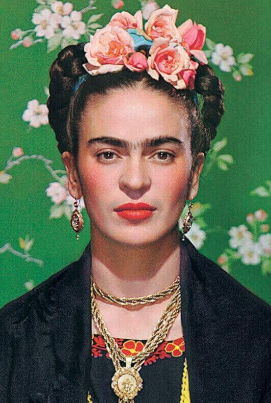

Pintora mexicana icónica, cuya obra refleja su identidad, dolor y pasión por la cultura de su país.
Frida Kahlo (1907–1954) fue una pintora mexicana reconocida mundialmente por sus autorretratos intensos y su estilo profundamente personal. Su obra combina elementos del surrealismo, el realismo mágico y la tradición popular mexicana. A través de su arte expresó su identidad, su dolor físico y emocional, y su perspectiva única sobre la vida, convirtiéndose en un ícono cultural y feminista.
